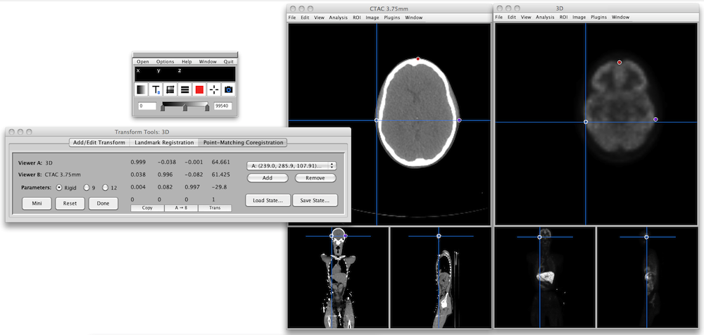

Program Review: Mango
Introduction
Mango
is a stable and highly capable Java-based medical image viewer
developed at the University of Texas Health Science Center in San
Antonio.
It is easy to use for small jobs but has a feature list
that includes surface and volume rendering, command-line mode for power
users and scripting, ROI editing and analysis, and sophisticated image
processing and filtering. For the programmer, a plugin API is
available to extend the program's capabilities. Most
users will use it as a DICOM viewer though it also supports NIFTI, NEMA
and Analyze file formats, and a flexible raw data input mode which
allows complete low-level control of the image data being read
in. It's available on all platforms and has a full installer to
get you started quickly.
Website
Mango have a comprehensive and well designed web site. Some of
the downloads available include:
- Plugin extensions for the program
- Sample test data.
- API for developing plugins to extend the program.
- Applet for displaying images on a web page.
The site has a very comprehensive revision history describing the
changes at each new version.
Getting The Software
Link to the program site through the I
Do
Imaging page for the program, as the links are regularly tested
and updated if necessary. This program is available for direct
download from UTHSC - there's nothing to fill out or wait for approval,
though there's an option to add your email for notification of
updates. Of course, you can also add this program to those you're
monitoring on I Do Imaging, so you'll receive emails when this or any
other of your tracked programs have been updated.
Installation
The program downloaded quickly and is available in three standard
installation formats: a Windows Installer Package, Macintosh disk image
(DMG), and a Linux zip file. As the program is supplied as a Java
Archive (JAR) file, the installer only needs to copy this file to a
supplied location, and add a small script or program to start Java
running on the JAR file. On the Mac and Linux platforms, this is
a very short shell script, whereas on Windows it is a short compiled
file. Still, having the installer do this step for you is a nice
touch.
Standard locations are suggested as an installation
location; I override these as I like to keep all my imaging programs
separate from other programs on my machines. On Windows I install
most imaging programs to C:\imaging;
on the Linux and Mac platforms I install to /usr/local
or to a directory imaging in
my home directory. This caused a small problem with the Mac
installer, since the startup script was hard coded to expect the
application directory to be called Mango and be in my home
directory. I edited the startup script to reflect the location of
the Mango directory, and all was well. A nice addition to the
installer script would be to accommodate changing the name and location
of the application directory.
Input Data
Mango can read data in DICOM
format, also NIFTI,
Analyze,
and
NEMA.
If
you
recognize
the
last three, you probably know what they are and
whether you need these file formats. We'll concentrate on the
DICOM format files. Mango also has the ability to have new file
formats added to its core functionality through the use of add-on
plugin modules. This is an extremely useful feature for the
advanced user working with uncommon file formats.
If you open a DICOM file, Mango will scan through the directory that
file is in, and open the whole volume. There is a list of
recently-opened files in the File menu, though it lists only the name
of the opened file or directory.
Mango has several very useful advanced DICOM
file-level features. The
Image Browser opens a file browser window that shows a summary of the
name of each data series, along with its major dimensions and
orientation, and a more detailed summary and preview image of the
currently selected series.
You can open multiple tabs in the browser, each of which shows the
studies in a particular location. These settings are preserved
between sessions, making it a useful place to bookmark favorite
directories.
When you open a DICOM
directory, Mango scans through its subdirectories
and determines which series are contained within it. The list of
series is then presented so one may be opened.
Mango also has the very useful ability to read in data as a raw stream
of bytes, and allows you to specify the full range of parameters for
loading these volumes. These include the voxel counts and
dimensions, also datatype sizing (8 through 32 bit), parity, ordering,
and encoding. This ability is invaluable when trying to read a
file in an unknown format, or raw binary voxel data from an image
file. This feature alone makes the program worth using, if you
work with files at the byte level.
Viewing and Rendering
Image volumes once loaded, are displayed in a standard orthoganal
view in a window which cannot be dragged to resize, but can be zoomed
using a zoom in/out option in the 'Window' menu. There are a wide
range of controls for adjusting the image
levels and colors. Multiple volumes may be opened at the same
time and there is an option to sync navigation between the
volumes. However when I tested this using different MRI series
from the same scanning session, although the navigation in each volume
was simultaneous, the navigation point was different in the two
volumes.
Advanced Viewing Functions
Transformations (scaling, rotations, translations) can be entered
manually or loaded from a file. This is particularly useful when
co-registering several different scans in the same or different
modalities. A stored transformation matrix file could be applied,
for instance, to several physically co-registered image volumes to
bring them into the same orientation. The orientation can be
reversed along all three axes, and the image origin can be manually
redefined.
Overlays are supported: applying one image on top of, or in the same
space as another. When I tested this feature I could get two
identical image volumes (such as two PET scans taken several minutes
apart) to overlay, but two volumes in different resolutions (such as a
CT in 512x512 and a PET in 128x128 resolution) did not appear in
co-registration although their image coordinate space was in
registration.
Extensibility
One of Mango's great strengths is its plugin architecture. This
allows software developers to write modules to add functionality to the
program. A number of plugins are supplied on the web site, and a
programmer's API is available for developing further modules.
Examples of plugin modules include adding the ability to run the
program from the command line to convert images between various
formats, or to rescale or concatenate images. Other available
plugins add advanced features such as an anatomical atlas and surface
rendering. Plugins can also be developed to allow the import of
file formats not currently supported by the program. The
extensible plugin architecture is a major feature of Mango and will
increase its usefulness, particularly if the developer community
continue to contribute new plugins.
Analysis
Mango has a very extensive set of ROI and VOI tools including the
ability to import and export ROIs, perform logical operations on ROIs,
gather statistics, and numerous other tools. ROIs and VOIs can be
defined through drawing directly using graphics primitives, tracing, or
thresholding. Wand tools allow regions to be defined
semi-automatically using seed points in 2D and 3D, and once defined can
be edited by hand or by tools such as dilation/erosion. This is a
highly advanced feature that has much more capability than I have
described here.
Another very powerful tool is the Image Calculator. This tool
performs arbitrary calculations between any open volume, slice, or
ROI. Images may have arithmetic operations performed on them -
for example, subtracting one similar image from another, then dividing
by the first image, will give an image denoting the difference betwen
the two images, expressed as a percentage.
Transformations can be edited using the Transform tool. The
example above shows a rotation about the Z axis, and the resulting
transformation matrix which may subsequently be saved and applied to
another volume. Saved transformations can also be edited using
this tool.

Registration between two image volumes can also be achieved using the
Transform tool. The example above shows point-matching
coregistration, where a coregistration matrix has been calculated from
identical landmark points placed by the user in two image
volumes. The transform can be defined as rigid, using 3 rotation
and 3 translation parameters, or as a 9- or 12-parameter nonrigid
transformation.
Performance
Summary
Mango is an exceptional program, well suited for a wide range of
applications. For the casual user it is a small, fast program
that can be used to view individual image files, or image volumes
stored in directories. More advanced users can use the volume and
surface rendering tools,
{kind=link}
{kind=link}
{kind=link}
{kind=link}
{kind=link}
{kind=link}
{kind=link}